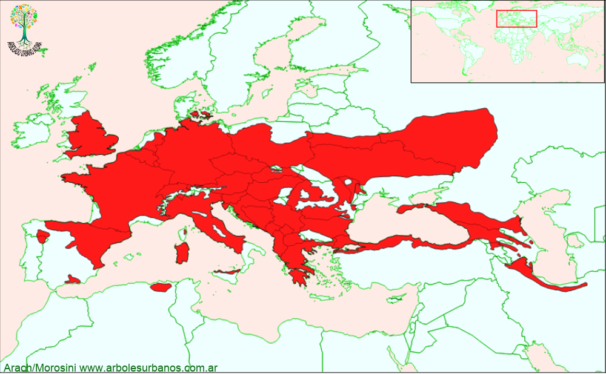

Click en las imágenes para ampliar

{kind=link}
{kind=link}
- NOMBRE CIENTÍFICO
- Acer campestris
- FAMILIA BOTÁNICA
- Aceráceas
- DESCRIPCIÓN GENERAL
- Es un árbol de porte pequeño, normalmente de hasta 10 metros de altura, a veces más de 15, con tronco algo tortuoso, copa de forma globosa muy ramificada. Es una especie de rápido crecimiento. Su corteza es de color gris oscura, que con la edad se torna gruesa y fisurada en placas rectangulares. Las hojas son simples de forma palmadas, con 5 lóbulos desiguales y base acorazonada, de hasta 8 cm. de largo y 10 cm. de ancho. De color verde oscuro en la cara superior, verde claro y algo pubescente en la cara inferior, de consistencia casi coriácea. En otoño pueden virar desde el amarillo dorado al rojo para luego desprenderse en su totalidad.
- FLORES
- Las flores son de color verde amarillento, reunidas en racimos erectos de hasta 10 cm. de largo, aparecen entre principio y mediados de la primavera.
- FRUTOS
- Los frutos son disámaras, con alas abiertas horizontalmente de hasta 4 cm. de largo, pueden ser de color verdoso o rojizo, para tornarse de color marrón cuando están maduras. Están reunidos en infrutescencias péndulas.
- ORIGEN
- Tiene una amplia zona dispersión. Por el sur, es la costa mediterránea de África, por el este la Península Ibérica, por el norte Suecia y Rusia y por el oeste se adentra en el Asia menor hasta Irán.
- USOS
- Posee una madera dura, de grano fino, utilizada en piezas menores, por contar solamente con fustes de escaso largo. La mayor utilización es de carácter ornamental, en jardines de pequeñas dimensiones, ya que posee una copa bastante compacta y requiere pocos cuidados.
- REPRODUCCIÓN
- Se lo multiplica fácilmente por semillas, respondiendo bien a las siembras en otoño.
- PARTICULARIDADES
- Soporta varios tipos de suelo, aunque prefiere los calcáreos, resiste el frío.